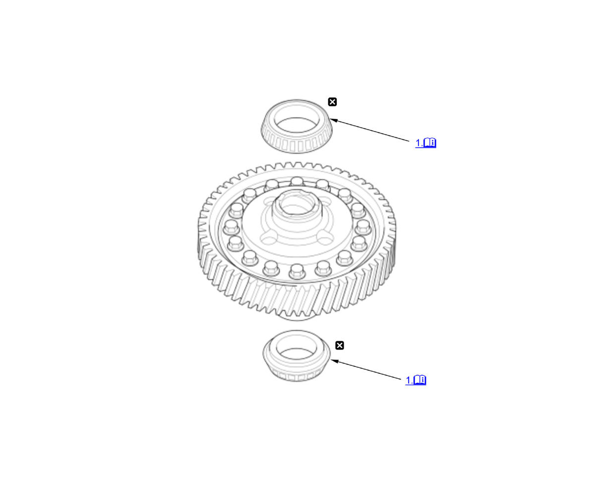

M/T Differential Carrier Bearing Replacement (K20C1 (M/T)) (2017 2018 2019 2020 2021): Replacement: Procedure
Numbered call-outs in figure pertain to list numbers in following procedure.

Courtesy of HONDA, U.S.A., INC. |
Detailed information, notes, and precautions |
 |
Replace |
Clutch Housing Side
- 45 x 80 x 21 mm Carrier Bearing - Remove
NOTE: When removing the 45 x 80 x 21 mm carrier bearing, do the following procedures.
- Check the 45 x 80 x 21 mm carrier bearing (A) for wear and rough rotation on the clutch housing with the bearing outer race. If it rotates smoothly and the rollers show no signs of wear, the bearing is OK.
- Remove the 45 x 80 x 21 mm carrier bearing using a commercially available bearing puller (B) and separator (C).
NOTE for installation
Install the 45 x 80 x 21 mm carrier bearing (A) until it bottoms using the 22 x 37/46 x 52 mm remover installer and a press (B). There should be no clearance between the carrier bearing and the differential carrier.
Transmission Housing Side
- 50 x 81 x 18 mm Carrier Bearing - Remove
NOTE: When removing the 50 x 81 x 18 mm carrier bearing, do the following procedures.
- Check the 50 x 81 x 18 mm carrier bearing (A) for wear and rough rotation on the transmission housing with the bearing outer race. If it rotates smoothly and the rollers show no signs of wear, the bearing is OK.
- Remove the 50 x 81 x 18 mm carrier bearing using a commercially available bearing puller (B) and separator (C).
NOTE for installation
Install the 50 x 81 x 18 mm carrier bearing (A) until it bottoms using the 50 mm installer attachment, an attachment (B), and a press (C). There should be no clearance between the carrier bearing and the differential carrier.